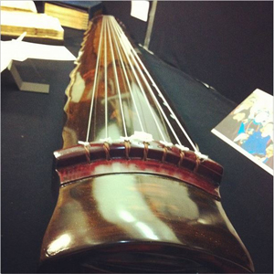

Chinese Music
Although the European missionaries and merchants who recorded accounts of the Middle Kingdom often suggested a monolithic expressive culture, Chinese music takes a wide array of forms that vary greatly by region and performance context. The objects in this collection represent a few examples of folk and court traditions practiced during the 18th century.
 |
||||
| Scene from Cihua Edition of Golden LotusQing Dynasty(more) | Lighting Incense at Miaofeng MountainLate Qing Dynasty(more) | Xiao Hui Ji(Qing) Daoguang 17, 1837(more) |
The qin, a seven-stringed zither, has occupied an important place in the history of Chinese music for the last two thousand years. During the 18th century, mastery of the qin was regarded as an essential pursuit for scholar-officials appointed by the emperor.
|  | ||
| QinPrivate collection of Meredith Schweig(more) | Boya's Internal MethodMing Dynasty, 1609(more) |
Chinese music enjoys a particularly close relationship with poetry and acting, and an array of theatrical traditions can be traced back to 1000 BCE. The highly stylized practices of Chinese opera have developed a complex symbolic language comprising costume and facial makeup, as well as musical and physical gesture. The objects here represent two of the most widely recognizable operatic traditions: Kun opera, originating in the 14th century, and Peking opera, which emerged during the 18th century.
| Score of Peony PavillionShanghai, 1921 (facs)(more) | The Thirteen Roles in Tongzhi andGuangxu Periods of the QingLate Qing Dynasty(more) |
Confucian scholars began compiling theoretical treatises on music as early as the 4th century BCE. Reflecting a conception of music as key to maintaining sociopolitical order, these texts provided extensive guidelines for proper tuning, performance practice, and the ritual applications of music.
| Treatise on the Absence of Emotions in Music1593(more) | Reminiscent Sounds of Utmost AntiquityMing, 1609(more) |